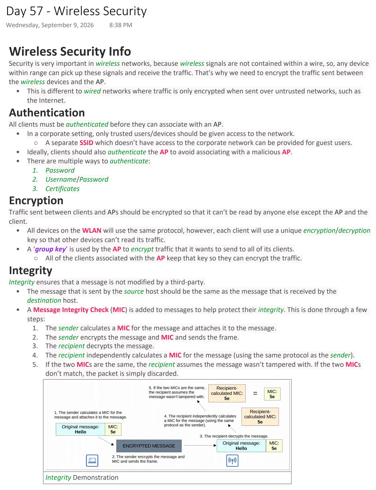
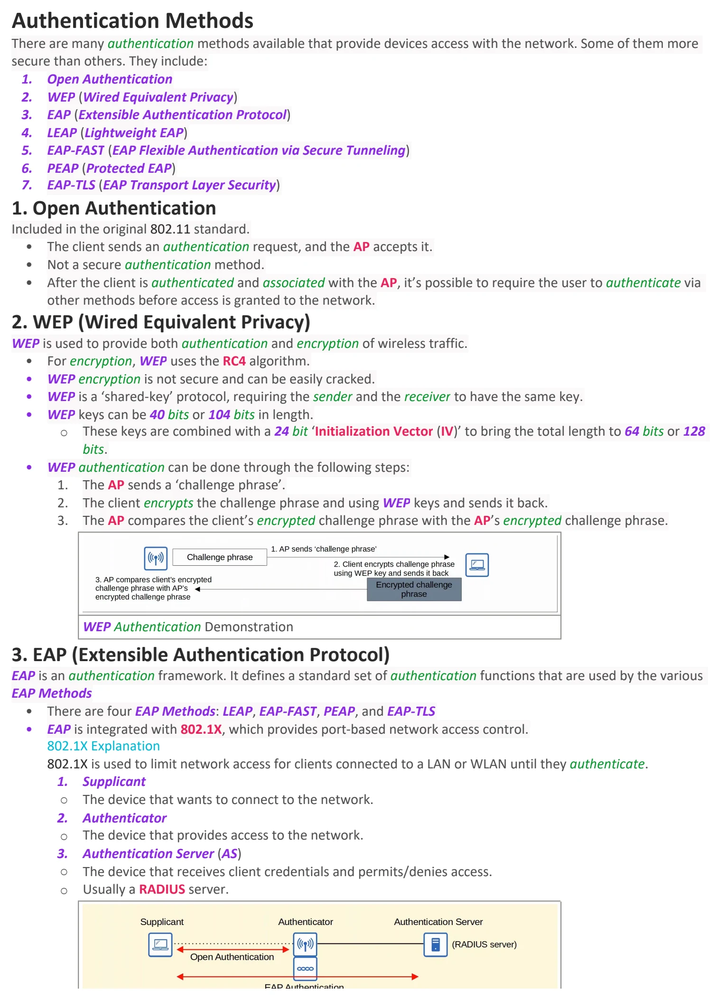
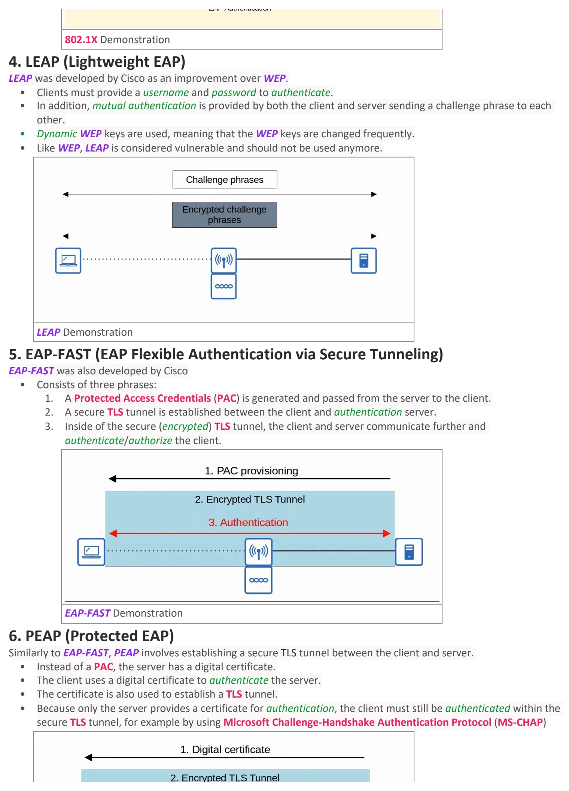
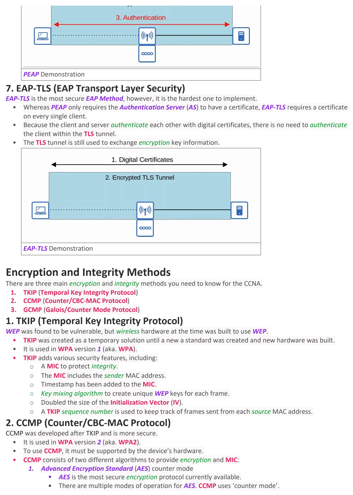
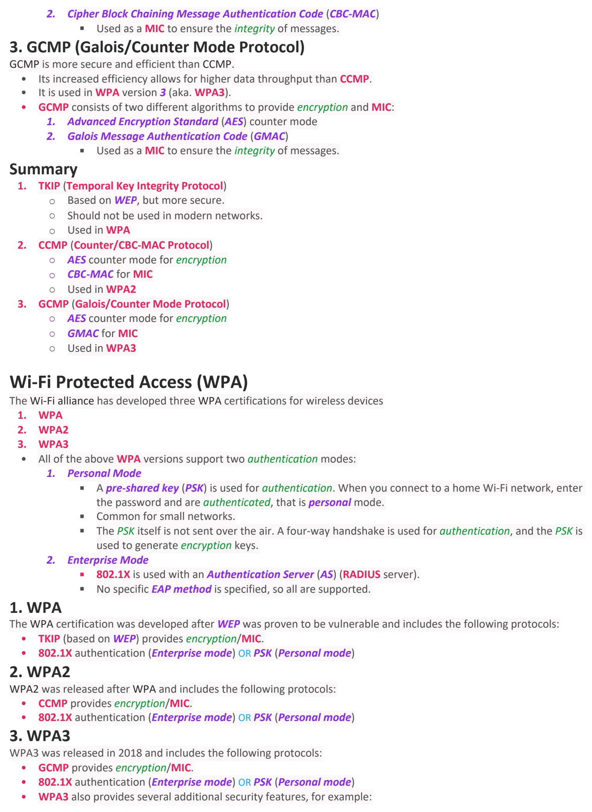
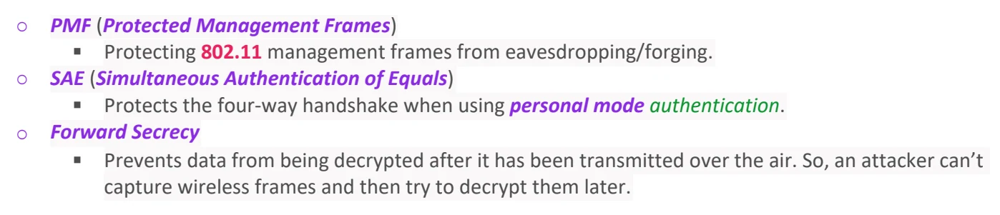

Wireless Security
Download original PDF





Text view — Wireless Security
Extracted from the original export. Diagrams and some formatting appear in the notes above.
Day 57 - Wireless Security Wednesday, September 9, 2026 8:38 PM Wireless Security Info Security is very important in wireless networks, because wireless signals are not contained within a wire, so, any device within range can pick up these signals and receive the traffic. That’s why we need to encrypt the traffic sent between the wireless devices and the AP. • This is different to wired networks where traffic is only encrypted when sent over untrusted networks, such as the Internet. Authentication All clients must be authenticated before they can associate with an AP. • In a corporate setting, only trusted users/devices should be given access to the network. ○ A separate SSID which doesn’t have access to the corporate network can be provided for guest users. • Ideally, clients should also authenticate the AP to avoid associating with a malicious AP. • There are multiple ways to authenticate: 1. Password 2. Username/Password 3. Certificates Encryption Traffic sent between clients and APs should be encrypted so that it can’t be read by anyone else except the AP and the client. • All devices on the WLAN will use the same protocol, however, each client will use a unique encryption/decryption key so that other devices can’t read its traffic. • A ‘group key’ is used by the AP to encrypt traffic that it wants to send to all of its clients. ○ All of the clients associated with the AP keep that key so they can encrypt the traffic. Integrity Integrity ensures that a message is not modified by a third-party. • The message that is sent by the source host should be the same as the message that is received by the destination host. • A Message Integrity Check (MIC) is added to messages to help protect their integrity. This is done through a few steps: 1. The sender calculates a MIC for the message and attaches it to the message. 2. The sender encrypts the message and MIC and sends the frame. 3. The recipient decrypts the message. 4. The recipient independently calculates a MIC for the message (using the same protocol as the sender). 5. If the two MICs are the same, the recipient assumes the message wasn’t tampered with. If the two MICs don’t match, the packet is simply discarded. Integrity Demonstration Authentication Methods There are many authentication methods available that provide devices access with the network. Some of them more secure than others. They include: 1. Open Authentication 2. WEP (Wired Equivalent Privacy) 3. EAP (Extensible Authentication Protocol) 4. LEAP (Lightweight EAP) 5. EAP-FAST (EAP Flexible Authentication via Secure Tunneling) 6. PEAP (Protected EAP) 7. EAP-TLS (EAP Transport Layer Security) 1. Open Authentication Included in the original 802.11 standard. • The client sends an authentication request, and the AP accepts it. • Not a secure authentication method. • After the client is authenticated and associated with the AP, it’s possible to require the user to authenticate via other methods before access is granted to the network. 2. WEP (Wired Equivalent Privacy) WEP is used to provide both authentication and encryption of wireless traffic. • For encryption, WEP uses the RC4 algorithm. • WEP encryption is not secure and can be easily cracked. • WEP is a ‘shared-key’ protocol, requiring the sender and the receiver to have the same key. • WEP keys can be 40 bits or 104 bits in length. ○ These keys are combined with a 24 bit ‘Initialization Vector (IV)’ to bring the total length to 64 bits or 128 bits. • WEP authentication can be done through the following steps: 1. The AP sends a ‘challenge phrase’. 2. The client encrypts the challenge phrase and using WEP keys and sends it back. 3. The AP compares the client’s encrypted challenge phrase with the AP’s encrypted challenge phrase. WEP Authentication Demonstration 3. EAP (Extensible Authentication Protocol) EAP is an authentication framework. It defines a standard set of authentication functions that are used by the various EAP Methods • There are four EAP Methods: LEAP, EAP-FAST, PEAP, and EAP-TLS • EAP is integrated with 802.1X, which provides port-based network access control. 802.1X Explanation 802.1X is used to limit network access for clients connected to a LAN or WLAN until they authenticate. 1. Supplicant ○ The device that wants to connect to the network. 2. Authenticator ○ The device that provides access to the network. 3. Authentication Server (AS) ○ The device that receives client credentials and permits/denies access. ○ Usually a RADIUS server. 802.1X Demonstration 4. LEAP (Lightweight EAP) LEAP was developed by Cisco as an improvement over WEP. • Clients must provide a username and password to authenticate. • In addition, mutual authentication is provided by both the client and server sending a challenge phrase to each other. • Dynamic WEP keys are used, meaning that the WEP keys are changed frequently. • Like WEP, LEAP is considered vulnerable and should not be used anymore. LEAP Demonstration 5. EAP-FAST (EAP Flexible Authentication via Secure Tunneling) EAP-FAST was also developed by Cisco • Consists of three phrases: 1. A Protected Access Credentials (PAC) is generated and passed from the server to the client. 2. A secure TLS tunnel is established between the client and authentication server. 3. Inside of the secure (encrypted) TLS tunnel, the client and server communicate further and authenticate/authorize the client. EAP-FAST Demonstration 6. PEAP (Protected EAP) Similarly to EAP-FAST, PEAP involves establishing a secure TLS tunnel between the client and server. • Instead of a PAC, the server has a digital certificate. • The client uses a digital certificate to authenticate the server. • The certificate is also used to establish a TLS tunnel. • Because only the server provides a certificate for authentication, the client must still be authenticated within the secure TLS tunnel, for example by using Microsoft Challenge-Handshake Authentication Protocol (MS-CHAP) PEAP Demonstration 7. EAP-TLS (EAP Transport Layer Security) EAP-TLS is the most secure EAP Method, however, it is the hardest one to implement. • Whereas PEAP only requires the Authentication Server (AS) to have a certificate, EAP-TLS requires a certificate on every single client. • Because the client and server authenticate each other with digital certificates, there is no need to authenticate the client within the TLS tunnel. • The TLS tunnel is still used to exchange encryption key information. EAP-TLS Demonstration Encryption and Integrity Methods There are three main encryption and integrity methods you need to know for the CCNA. 1. TKIP (Temporal Key Integrity Protocol) 2. CCMP (Counter/CBC-MAC Protocol) 3. GCMP (Galois/Counter Mode Protocol) 1. TKIP (Temporal Key Integrity Protocol) WEP was found to be vulnerable, but wireless hardware at the time was built to use WEP. • TKIP was created as a temporary solution until a new a standard was created and new hardware was built. • It is used in WPA version 1 (aka. WPA). • TKIP adds various security features, including: ○ A MIC to protect integrity. ○ The MIC includes the sender MAC address. ○ Timestamp has been added to the MIC. ○ Key mixing algorithm to create unique WEP keys for each frame. ○ Doubled the size of the Initialization Vector (IV). ○ A TKIP sequence number is used to keep track of frames sent from each source MAC address. 2. CCMP (Counter/CBC-MAC Protocol) CCMP was developed after TKIP and is more secure. • It is used in WPA version 2 (aka. WPA2). • To use CCMP, it must be supported by the device’s hardware. • CCMP consists of two different algorithms to provide encryption and MIC: 1. Advanced Encryption Standard (AES) counter mode § AES is the most secure encryption protocol currently available. § There are multiple modes of operation for AES. CCMP uses ‘counter mode’. 2. Cipher Block Chaining Message Authentication Code (CBC-MAC) § Used as a MIC to ensure the integrity of messages. 3. GCMP (Galois/Counter Mode Protocol) GCMP is more secure and efficient than CCMP. • Its increased efficiency allows for higher data throughput than CCMP. • It is used in WPA version 3 (aka. WPA3). • GCMP consists of two different algorithms to provide encryption and MIC: 1. Advanced Encryption Standard (AES) counter mode 2. Galois Message Authentication Code (GMAC) § Used as a MIC to ensure the integrity of messages. Summary 1. TKIP (Temporal Key Integrity Protocol) ○ Based on WEP, but more secure. ○ Should not be used in modern networks. ○ Used in WPA 2. CCMP (Counter/CBC-MAC Protocol) ○ AES counter mode for encryption ○ CBC-MAC for MIC ○ Used in WPA2 3. GCMP (Galois/Counter Mode Protocol) ○ AES counter mode for encryption ○ GMAC for MIC ○ Used in WPA3 Wi-Fi Protected Access (WPA) The Wi-Fi alliance has developed three WPA certifications for wireless devices 1. WPA 2. WPA2 3. WPA3 • All of the above WPA versions support two authentication modes: 1. Personal Mode § A pre-shared key (PSK) is used for authentication. When you connect to a home Wi-Fi network, enter the password and are authenticated, that is personal mode. § Common for small networks. § The PSK itself is not sent over the air. A four-way handshake is used for authentication, and the PSK is used to generate encryption keys. 2. Enterprise Mode § 802.1X is used with an Authentication Server (AS) (RADIUS server). § No specific EAP method is specified, so all are supported. 1. WPA The WPA certification was developed after WEP was proven to be vulnerable and includes the following protocols: • TKIP (based on WEP) provides encryption/MIC. • 802.1X authentication (Enterprise mode) OR PSK (Personal mode) 2. WPA2 WPA2 was released after WPA and includes the following protocols: • CCMP provides encryption/MIC. • 802.1X authentication (Enterprise mode) OR PSK (Personal mode) 3. WPA3 WPA3 was released in 2018 and includes the following protocols: • GCMP provides encryption/MIC. • 802.1X authentication (Enterprise mode) OR PSK (Personal mode) • WPA3 also provides several additional security features, for example: ○ PMF (Protected Management Frames) § Protecting 802.11 management frames from eavesdropping/forging. ○ SAE (Simultaneous Authentication of Equals) § Protects the four-way handshake when using personal mode authentication. ○ Forward Secrecy § Prevents data from being decrypted after it has been transmitted over the air. So, an attacker can’t capture wireless frames and then try to decrypt them later. Day 57 - Wireless Security Wednesday, September 9, 2026 8:38 PM Wireless Security Info Security is very important in wireless networks, because wireless signals are not contained within a wire, so, any device within range can pick up these signals and receive the traffic. That’s why we need to encrypt the traffic sent between the wireless devices and the AP. • This is different to wired networks where traffic is only encrypted when sent over untrusted networks, such as the Internet. Authentication All clients must be authenticated before they can associate with an AP. • In a corporate setting, only trusted users/devices should be given access to the network. ○ A separate SSID which doesn’t have access to the corporate network can be provided for guest users. • Ideally, clients should also authenticate the AP to avoid associating with a malicious AP. • There are multiple ways to authenticate: 1. Password 2. Username/Password 3. Certificates Encryption Traffic sent between clients and APs should be encrypted so that it can’t be read by anyone else except the AP and the client. • All devices on the WLAN will use the same protocol, however, each client will use a unique encryption/decryption key so that other devices can’t read its traffic. • A ‘group key’ is used by the AP to encrypt traffic that it wants to send to all of its clients. ○ All of the clients associated with the AP keep that key so they can encrypt the traffic. Integrity Integrity ensures that a message is not modified by a third-party. • The message that is sent by the source host should be the same as the message that is received by the destination host. • A Message Integrity Check (MIC) is added to messages to help protect their integrity. This is done through a few steps: 1. The sender calculates a MIC for the message and attaches it to the message. 2. The sender encrypts the message and MIC and sends the frame. 3. The recipient decrypts the message. 4. The recipient independently calculates a MIC for the message (using the same protocol as the sender). 5. If the two MICs are the same, the recipient assumes the message wasn’t tampered with. If the two MICs don’t match, the packet is simply discarded. Integrity Demonstration Authentication Methods There are many authentication methods available that provide devices access with the network. Some of them more secure than others. They include: 1. Open Authentication 2. WEP (Wired Equivalent Privacy) 3. EAP (Extensible Authentication Protocol) 4. LEAP (Lightweight EAP) 5. EAP-FAST (EAP Flexible Authentication via Secure Tunneling) 6. PEAP (Protected EAP) 7. EAP-TLS (EAP Transport Layer Security) 1. Open Authentication Included in the original 802.11 standard. • The client sends an authentication request, and the AP accepts it. • Not a secure authentication method. • After the client is authenticated and associated with the AP, it’s possible to require the user to authenticate via other methods before access is granted to the network. 2. WEP (Wired Equivalent Privacy) WEP is used to provide both authentication and encryption of wireless traffic. • For encryption, WEP uses the RC4 algorithm. • WEP encryption is not secure and can be easily cracked. • WEP is a ‘shared-key’ protocol, requiring the sender and the receiver to have the same key. • WEP keys can be 40 bits or 104 bits in length. ○ These keys are combined with a 24 bit ‘Initialization Vector (IV)’ to bring the total length to 64 bits or 128 bits. • WEP authentication can be done through the following steps: 1. The AP sends a ‘challenge phrase’. 2. The client encrypts the challenge phrase and using WEP keys and sends it back. 3. The AP compares the client’s encrypted challenge phrase with the AP’s encrypted challenge phrase. WEP Authentication Demonstration 3. EAP (Extensible Authentication Protocol) EAP is an authentication framework. It defines a standard set of authentication functions that are used by the various EAP Methods • There are four EAP Methods: LEAP, EAP-FAST, PEAP, and EAP-TLS • EAP is integrated with 802.1X, which provides port-based network access control. 802.1X Explanation 802.1X is used to limit network access for clients connected to a LAN or WLAN until they authenticate. 1. Supplicant ○ The device that wants to connect to the network. 2. Authenticator ○ The device that provides access to the network. 3. Authentication Server (AS) ○ The device that receives client credentials and permits/denies access. ○ Usually a RADIUS server. 802.1X Demonstration 4. LEAP (Lightweight EAP) LEAP was developed by Cisco as an improvement over WEP. • Clients must provide a username and password to authenticate. • In addition, mutual authentication is provided by both the client and server sending a challenge phrase to each other. • Dynamic WEP keys are used, meaning that the WEP keys are changed frequently. • Like WEP, LEAP is considered vulnerable and should not be used anymore. LEAP Demonstration 5. EAP-FAST (EAP Flexible Authentication via Secure Tunneling) EAP-FAST was also developed by Cisco • Consists of three phrases: 1. A Protected Access Credentials (PAC) is generated and passed from the server to the client. 2. A secure TLS tunnel is established between the client and authentication server. 3. Inside of the secure (encrypted) TLS tunnel, the client and server communicate further and authenticate/authorize the client. EAP-FAST Demonstration 6. PEAP (Protected EAP) Similarly to EAP-FAST, PEAP involves establishing a secure TLS tunnel between the client and server. • Instead of a PAC, the server has a digital certificate. • The client uses a digital certificate to authenticate the server. • The certificate is also used to establish a TLS tunnel. • Because only the server provides a certificate for authentication, the client must still be authenticated within the secure TLS tunnel, for example by using Microsoft Challenge-Handshake Authentication Protocol (MS-CHAP) PEAP Demonstration 7. EAP-TLS (EAP Transport Layer Security) EAP-TLS is the most secure EAP Method, however, it is the hardest one to implement. • Whereas PEAP only requires the Authentication Server (AS) to have a certificate, EAP-TLS requires a certificate on every single client. • Because the client and server authenticate each other with digital certificates, there is no need to authenticate the client within the TLS tunnel. • The TLS tunnel is still used to exchange encryption key information. EAP-TLS Demonstration Encryption and Integrity Methods There are three main encryption and integrity methods you need to know for the CCNA. 1. TKIP (Temporal Key Integrity Protocol) 2. CCMP (Counter/CBC-MAC Protocol) 3. GCMP (Galois/Counter Mode Protocol) 1. TKIP (Temporal Key Integrity Protocol) WEP was found to be vulnerable, but wireless hardware at the time was built to use WEP. • TKIP was created as a temporary solution until a new a standard was created and new hardware was built. • It is used in WPA version 1 (aka. WPA). • TKIP adds various security features, including: ○ A MIC to protect integrity. ○ The MIC includes the sender MAC address. ○ Timestamp has been added to the MIC. ○ Key mixing algorithm to create unique WEP keys for each frame. ○ Doubled the size of the Initialization Vector (IV). ○ A TKIP sequence number is used to keep track of frames sent from each source MAC address. 2. CCMP (Counter/CBC-MAC Protocol) CCMP was developed after TKIP and is more secure. • It is used in WPA version 2 (aka. WPA2). • To use CCMP, it must be supported by the device’s hardware. • CCMP consists of two different algorithms to provide encryption and MIC: 1. Advanced Encryption Standard (AES) counter mode § AES is the most secure encryption protocol currently available. § There are multiple modes of operation for AES. CCMP uses ‘counter mode’. 2. Cipher Block Chaining Message Authentication Code (CBC-MAC) § Used as a MIC to ensure the integrity of messages. 3. GCMP (Galois/Counter Mode Protocol) GCMP is more secure and efficient than CCMP. • Its increased efficiency allows for higher data throughput than CCMP. • It is used in WPA version 3 (aka. WPA3). • GCMP consists of two different algorithms to provide encryption and MIC: 1. Advanced Encryption Standard (AES) counter mode 2. Galois Message Authentication Code (GMAC) § Used as a MIC to ensure the integrity of messages. Summary 1. TKIP (Temporal Key Integrity Protocol) ○ Based on WEP, but more secure. ○ Should not be used in modern networks. ○ Used in WPA 2. CCMP (Counter/CBC-MAC Protocol) ○ AES counter mode for encryption ○ CBC-MAC for MIC ○ Used in WPA2 3. GCMP (Galois/Counter Mode Protocol) ○ AES counter mode for encryption ○ GMAC for MIC ○ Used in WPA3 Wi-Fi Protected Access (WPA) The Wi-Fi alliance has developed three WPA certifications for wireless devices 1. WPA 2. WPA2 3. WPA3 • All of the above WPA versions support two authentication modes: 1. Personal Mode § A pre-shared key (PSK) is used for authentication. When you connect to a home Wi-Fi network, enter the password and are authenticated, that is personal mode. § Common for small networks. § The PSK itself is not sent over the air. A four-way handshake is used for authentication, and the PSK is used to generate encryption keys. 2. Enterprise Mode § 802.1X is used with an Authentication Server (AS) (RADIUS server). § No specific EAP method is specified, so all are supported. 1. WPA The WPA certification was developed after WEP was proven to be vulnerable and includes the following protocols: • TKIP (based on WEP) provides encryption/MIC. • 802.1X authentication (Enterprise mode) OR PSK (Personal mode) 2. WPA2 WPA2 was released after WPA and includes the following protocols: • CCMP provides encryption/MIC. • 802.1X authentication (Enterprise mode) OR PSK (Personal mode) 3. WPA3 WPA3 was released in 2018 and includes the following protocols: • GCMP provides encryption/MIC. • 802.1X authentication (Enterprise mode) OR PSK (Personal mode) • WPA3 also provides several additional security features, for example: ○ PMF (Protected Management Frames) § Protecting 802.11 management frames from eavesdropping/forging. ○ SAE (Simultaneous Authentication of Equals) § Protects the four-way handshake when using personal mode authentication. ○ Forward Secrecy § Prevents data from being decrypted after it has been transmitted over the air. So, an attacker can’t capture wireless frames and then try to decrypt them later. Day 57 - Wireless Security Wednesday, September 9, 2026 8:38 PM Wireless Security Info Security is very important in wireless networks, because wireless signals are not contained within a wire, so, any device within range can pick up these signals and receive the traffic. That’s why we need to encrypt the traffic sent between the wireless devices and the AP. • This is different to wired networks where traffic is only encrypted when sent over untrusted networks, such as the Internet. Authentication All clients must be authenticated before they can associate with an AP. • In a corporate setting, only trusted users/devices should be given access to the network. ○ A separate SSID which doesn’t have access to the corporate network can be provided for guest users. • Ideally, clients should also authenticate the AP to avoid associating with a malicious AP. • There are multiple ways to authenticate: 1. Password 2. Username/Password 3. Certificates Encryption Traffic sent between clients and APs should be encrypted so that it can’t be read by anyone else except the AP and the client. • All devices on the WLAN will use the same protocol, however, each client will use a unique encryption/decryption key so that other devices can’t read its traffic. • A ‘group key’ is used by the AP to encrypt traffic that it wants to send to all of its clients. ○ All of the clients associated with the AP keep that key so they can encrypt the traffic. Integrity Integrity ensures that a message is not modified by a third-party. • The message that is sent by the source host should be the same as the message that is received by the destination host. • A Message Integrity Check (MIC) is added to messages to help protect their integrity. This is done through a few steps: 1. The sender calculates a MIC for the message and attaches it to the message. 2. The sender encrypts the message and MIC and sends the frame. 3. The recipient decrypts the message. 4. The recipient independently calculates a MIC for the message (using the same protocol as the sender). 5. If the two MICs are the same, the recipient assumes the message wasn’t tampered with. If the two MICs don’t match, the packet is simply discarded. Integrity Demonstration Authentication Methods There are many authentication methods available that provide devices access with the network. Some of them more secure than others. They include: 1. Open Authentication 2. WEP (Wired Equivalent Privacy) 3. EAP (Extensible Authentication Protocol) 4. LEAP (Lightweight EAP) 5. EAP-FAST (EAP Flexible Authentication via Secure Tunneling) 6. PEAP (Protected EAP) 7. EAP-TLS (EAP Transport Layer Security) 1. Open Authentication Included in the original 802.11 standard. • The client sends an authentication request, and the AP accepts it. • Not a secure authentication method. • After the client is authenticated and associated with the AP, it’s possible to require the user to authenticate via other methods before access is granted to the network. 2. WEP (Wired Equivalent Privacy) WEP is used to provide both authentication and encryption of wireless traffic. • For encryption, WEP uses the RC4 algorithm. • WEP encryption is not secure and can be easily cracked. • WEP is a ‘shared-key’ protocol, requiring the sender and the receiver to have the same key. • WEP keys can be 40 bits or 104 bits in length. ○ These keys are combined with a 24 bit ‘Initialization Vector (IV)’ to bring the total length to 64 bits or 128 bits. • WEP authentication can be done through the following steps: 1. The AP sends a ‘challenge phrase’. 2. The client encrypts the challenge phrase and using WEP keys and sends it back. 3. The AP compares the client’s encrypted challenge phrase with the AP’s encrypted challenge phrase. WEP Authentication Demonstration 3. EAP (Extensible Authentication Protocol) EAP is an authentication framework. It defines a standard set of authentication functions that are used by the various EAP Methods • There are four EAP Methods: LEAP, EAP-FAST, PEAP, and EAP-TLS • EAP is integrated with 802.1X, which provides port-based network access control. 802.1X Explanation 802.1X is used to limit network access for clients connected to a LAN or WLAN until they authenticate. 1. Supplicant ○ The device that wants to connect to the network. 2. Authenticator ○ The device that provides access to the network. 3. Authentication Server (AS) ○ The device that receives client credentials and permits/denies access. ○ Usually a RADIUS server. 802.1X Demonstration 4. LEAP (Lightweight EAP) LEAP was developed by Cisco as an improvement over WEP. • Clients must provide a username and password to authenticate. • In addition, mutual authentication is provided by both the client and server sending a challenge phrase to each other. • Dynamic WEP keys are used, meaning that the WEP keys are changed frequently. • Like WEP, LEAP is considered vulnerable and should not be used anymore. LEAP Demonstration 5. EAP-FAST (EAP Flexible Authentication via Secure Tunneling) EAP-FAST was also developed by Cisco • Consists of three phrases: 1. A Protected Access Credentials (PAC) is generated and passed from the server to the client. 2. A secure TLS tunnel is established between the client and authentication server. 3. Inside of the secure (encrypted) TLS tunnel, the client and server communicate further and authenticate/authorize the client. EAP-FAST Demonstration 6. PEAP (Protected EAP) Similarly to EAP-FAST, PEAP involves establishing a secure TLS tunnel between the client and server. • Instead of a PAC, the server has a digital certificate. • The client uses a digital certificate to authenticate the server. • The certificate is also used to establish a TLS tunnel. • Because only the server provides a certificate for authentication, the client must still be authenticated within the secure TLS tunnel, for example by using Microsoft Challenge-Handshake Authentication Protocol (MS-CHAP) PEAP Demonstration 7. EAP-TLS (EAP Transport Layer Security) EAP-TLS is the most secure EAP Method, however, it is the hardest one to implement. • Whereas PEAP only requires the Authentication Server (AS) to have a certificate, EAP-TLS requires a certificate on every single client. • Because the client and server authenticate each other with digital certificates, there is no need to authenticate the client within the TLS tunnel. • The TLS tunnel is still used to exchange encryption key information. EAP-TLS Demonstration Encryption and Integrity Methods There are three main encryption and integrity methods you need to know for the CCNA. 1. TKIP (Temporal Key Integrity Protocol) 2. CCMP (Counter/CBC-MAC Protocol) 3. GCMP (Galois/Counter Mode Protocol) 1. TKIP (Temporal Key Integrity Protocol) WEP was found to be vulnerable, but wireless hardware at the time was built to use WEP. • TKIP was created as a temporary solution until a new a standard was created and new hardware was built. • It is used in WPA version 1 (aka. WPA). • TKIP adds various security features, including: ○ A MIC to protect integrity. ○ The MIC includes the sender MAC address. ○ Timestamp has been added to the MIC. ○ Key mixing algorithm to create unique WEP keys for each frame. ○ Doubled the size of the Initialization Vector (IV). ○ A TKIP sequence number is used to keep track of frames sent from each source MAC address. 2. CCMP (Counter/CBC-MAC Protocol) CCMP was developed after TKIP and is more secure. • It is used in WPA version 2 (aka. WPA2). • To use CCMP, it must be supported by the device’s hardware. • CCMP consists of two different algorithms to provide encryption and MIC: 1. Advanced Encryption Standard (AES) counter mode § AES is the most secure encryption protocol currently available. § There are multiple modes of operation for AES. CCMP uses ‘counter mode’. 2. Cipher Block Chaining Message Authentication Code (CBC-MAC) § Used as a MIC to ensure the integrity of messages. 3. GCMP (Galois/Counter Mode Protocol) GCMP is more secure and efficient than CCMP. • Its increased efficiency allows for higher data throughput than CCMP. • It is used in WPA version 3 (aka. WPA3). • GCMP consists of two different algorithms to provide encryption and MIC: 1. Advanced Encryption Standard (AES) counter mode 2. Galois Message Authentication Code (GMAC) § Used as a MIC to ensure the integrity of messages. Summary 1. TKIP (Temporal Key Integrity Protocol) ○ Based on WEP, but more secure. ○ Should not be used in modern networks. ○ Used in WPA 2. CCMP (Counter/CBC-MAC Protocol) ○ AES counter mode for encryption ○ CBC-MAC for MIC ○ Used in WPA2 3. GCMP (Galois/Counter Mode Protocol) ○ AES counter mode for encryption ○ GMAC for MIC ○ Used in WPA3 Wi-Fi Protected Access (WPA) The Wi-Fi alliance has developed three WPA certifications for wireless devices 1. WPA 2. WPA2 3. WPA3 • All of the above WPA versions support two authentication modes: 1. Personal Mode § A pre-shared key (PSK) is used for authentication. When you connect to a home Wi-Fi network, enter the password and are authenticated, that is personal mode. § Common for small networks. § The PSK itself is not sent over the air. A four-way handshake is used for authentication, and the PSK is used to generate encryption keys. 2. Enterprise Mode § 802.1X is used with an Authentication Server (AS) (RADIUS server). § No specific EAP method is specified, so all are supported. 1. WPA The WPA certification was developed after WEP was proven to be vulnerable and includes the following protocols: • TKIP (based on WEP) provides encryption/MIC. • 802.1X authentication (Enterprise mode) OR PSK (Personal mode) 2. WPA2 WPA2 was released after WPA and includes the following protocols: • CCMP provides encryption/MIC. • 802.1X authentication (Enterprise mode) OR PSK (Personal mode) 3. WPA3 WPA3 was released in 2018 and includes the following protocols: • GCMP provides encryption/MIC. • 802.1X authentication (Enterprise mode) OR PSK (Personal mode) • WPA3 also provides several additional security features, for example: ○ PMF (Protected Management Frames) § Protecting 802.11 management frames from eavesdropping/forging. ○ SAE (Simultaneous Authentication of Equals) § Protects the four-way handshake when using personal mode authentication. ○ Forward Secrecy § Prevents data from being decrypted after it has been transmitted over the air. So, an attacker can’t capture wireless frames and then try to decrypt them later. Day 57 - Wireless Security Wednesday, September 9, 2026 8:38 PM Wireless Security Info Security is very important in wireless networks, because wireless signals are not contained within a wire, so, any device within range can pick up these signals and receive the traffic. That’s why we need to encrypt the traffic sent between the wireless devices and the AP. • This is different to wired networks where traffic is only encrypted when sent over untrusted networks, such as the Internet. Authentication All clients must be authenticated before they can associate with an AP. • In a corporate setting, only trusted users/devices should be given access to the network. ○ A separate SSID which doesn’t have access to the corporate network can be provided for guest users. • Ideally, clients should also authenticate the AP to avoid associating with a malicious AP. • There are multiple ways to authenticate: 1. Password 2. Username/Password 3. Certificates Encryption Traffic sent between clients and APs should be encrypted so that it can’t be read by anyone else except the AP and the client. • All devices on the WLAN will use the same protocol, however, each client will use a unique encryption/decryption key so that other devices can’t read its traffic. • A ‘group key’ is used by the AP to encrypt traffic that it wants to send to all of its clients. ○ All of the clients associated with the AP keep that key so they can encrypt the traffic. Integrity Integrity ensures that a message is not modified by a third-party. • The message that is sent by the source host should be the same as the message that is received by the destination host. • A Message Integrity Check (MIC) is added to messages to help protect their integrity. This is done through a few steps: 1. The sender calculates a MIC for the message and attaches it to the message. 2. The sender encrypts the message and MIC and sends the frame. 3. The recipient decrypts the message. 4. The recipient independently calculates a MIC for the message (using the same protocol as the sender). 5. If the two MICs are the same, the recipient assumes the message wasn’t tampered with. If the two MICs don’t match, the packet is simply discarded. Integrity Demonstration Authentication Methods There are many authentication methods available that provide devices access with the network. Some of them more secure than others. They include: 1. Open Authentication 2. WEP (Wired Equivalent Privacy) 3. EAP (Extensible Authentication Protocol) 4. LEAP (Lightweight EAP) 5. EAP-FAST (EAP Flexible Authentication via Secure Tunneling) 6. PEAP (Protected EAP) 7. EAP-TLS (EAP Transport Layer Security) 1. Open Authentication Included in the original 802.11 standard. • The client sends an authentication request, and the AP accepts it. • Not a secure authentication method. • After the client is authenticated and associated with the AP, it’s possible to require the user to authenticate via other methods before access is granted to the network. 2. WEP (Wired Equivalent Privacy) WEP is used to provide both authentication and encryption of wireless traffic. • For encryption, WEP uses the RC4 algorithm. • WEP encryption is not secure and can be easily cracked. • WEP is a ‘shared-key’ protocol, requiring the sender and the receiver to have the same key. • WEP keys can be 40 bits or 104 bits in length. ○ These keys are combined with a 24 bit ‘Initialization Vector (IV)’ to bring the total length to 64 bits or 128 bits. • WEP authentication can be done through the following steps: 1. The AP sends a ‘challenge phrase’. 2. The client encrypts the challenge phrase and using WEP keys and sends it back. 3. The AP compares the client’s encrypted challenge phrase with the AP’s encrypted challenge phrase. WEP Authentication Demonstration 3. EAP (Extensible Authentication Protocol) EAP is an authentication framework. It defines a standard set of authentication functions that are used by the various EAP Methods • There are four EAP Methods: LEAP, EAP-FAST, PEAP, and EAP-TLS • EAP is integrated with 802.1X, which provides port-based network access control. 802.1X Explanation 802.1X is used to limit network access for clients connected to a LAN or WLAN until they authenticate. 1. Supplicant ○ The device that wants to connect to the network. 2. Authenticator ○ The device that provides access to the network. 3. Authentication Server (AS) ○ The device that receives client credentials and permits/denies access. ○ Usually a RADIUS server. 802.1X Demonstration 4. LEAP (Lightweight EAP) LEAP was developed by Cisco as an improvement over WEP. • Clients must provide a username and password to authenticate. • In addition, mutual authentication is provided by both the client and server sending a challenge phrase to each other. • Dynamic WEP keys are used, meaning that the WEP keys are changed frequently. • Like WEP, LEAP is considered vulnerable and should not be used anymore. LEAP Demonstration 5. EAP-FAST (EAP Flexible Authentication via Secure Tunneling) EAP-FAST was also developed by Cisco • Consists of three phrases: 1. A Protected Access Credentials (PAC) is generated and passed from the server to the client. 2. A secure TLS tunnel is established between the client and authentication server. 3. Inside of the secure (encrypted) TLS tunnel, the client and server communicate further and authenticate/authorize the client. EAP-FAST Demonstration 6. PEAP (Protected EAP) Similarly to EAP-FAST, PEAP involves establishing a secure TLS tunnel between the client and server. • Instead of a PAC, the server has a digital certificate. • The client uses a digital certificate to authenticate the server. • The certificate is also used to establish a TLS tunnel. • Because only the server provides a certificate for authentication, the client must still be authenticated within the secure TLS tunnel, for example by using Microsoft Challenge-Handshake Authentication Protocol (MS-CHAP) PEAP Demonstration 7. EAP-TLS (EAP Transport Layer Security) EAP-TLS is the most secure EAP Method, however, it is the hardest one to implement. • Whereas PEAP only requires the Authentication Server (AS) to have a certificate, EAP-TLS requires a certificate on every single client. • Because the client and server authenticate each other with digital certificates, there is no need to authenticate the client within the TLS tunnel. • The TLS tunnel is still used to exchange encryption key information. EAP-TLS Demonstration Encryption and Integrity Methods There are three main encryption and integrity methods you need to know for the CCNA. 1. TKIP (Temporal Key Integrity Protocol) 2. CCMP (Counter/CBC-MAC Protocol) 3. GCMP (Galois/Counter Mode Protocol) 1. TKIP (Temporal Key Integrity Protocol) WEP was found to be vulnerable, but wireless hardware at the time was built to use WEP. • TKIP was created as a temporary solution until a new a standard was created and new hardware was built. • It is used in WPA version 1 (aka. WPA). • TKIP adds various security features, including: ○ A MIC to protect integrity. ○ The MIC includes the sender MAC address. ○ Timestamp has been added to the MIC. ○ Key mixing algorithm to create unique WEP keys for each frame. ○ Doubled the size of the Initialization Vector (IV). ○ A TKIP sequence number is used to keep track of frames sent from each source MAC address. 2. CCMP (Counter/CBC-MAC Protocol) CCMP was developed after TKIP and is more secure. • It is used in WPA version 2 (aka. WPA2). • To use CCMP, it must be supported by the device’s hardware. • CCMP consists of two different algorithms to provide encryption and MIC: 1. Advanced Encryption Standard (AES) counter mode § AES is the most secure encryption protocol currently available. § There are multiple modes of operation for AES. CCMP uses ‘counter mode’. 2. Cipher Block Chaining Message Authentication Code (CBC-MAC) § Used as a MIC to ensure the integrity of messages. 3. GCMP (Galois/Counter Mode Protocol) GCMP is more secure and efficient than CCMP. • Its increased efficiency allows for higher data throughput than CCMP. • It is used in WPA version 3 (aka. WPA3). • GCMP consists of two different algorithms to provide encryption and MIC: 1. Advanced Encryption Standard (AES) counter mode 2. Galois Message Authentication Code (GMAC) § Used as a MIC to ensure the integrity of messages. Summary 1. TKIP (Temporal Key Integrity Protocol) ○ Based on WEP, but more secure. ○ Should not be used in modern networks. ○ Used in WPA 2. CCMP (Counter/CBC-MAC Protocol) ○ AES counter mode for encryption ○ CBC-MAC for MIC ○ Used in WPA2 3. GCMP (Galois/Counter Mode Protocol) ○ AES counter mode for encryption ○ GMAC for MIC ○ Used in WPA3 Wi-Fi Protected Access (WPA) The Wi-Fi alliance has developed three WPA certifications for wireless devices 1. WPA 2. WPA2 3. WPA3 • All of the above WPA versions support two authentication modes: 1. Personal Mode § A pre-shared key (PSK) is used for authentication. When you connect to a home Wi-Fi network, enter the password and are authenticated, that is personal mode. § Common for small networks. § The PSK itself is not sent over the air. A four-way handshake is used for authentication, and the PSK is used to generate encryption keys. 2. Enterprise Mode § 802.1X is used with an Authentication Server (AS) (RADIUS server). § No specific EAP method is specified, so all are supported. 1. WPA The WPA certification was developed after WEP was proven to be vulnerable and includes the following protocols: • TKIP (based on WEP) provides encryption/MIC. • 802.1X authentication (Enterprise mode) OR PSK (Personal mode) 2. WPA2 WPA2 was released after WPA and includes the following protocols: • CCMP provides encryption/MIC. • 802.1X authentication (Enterprise mode) OR PSK (Personal mode) 3. WPA3 WPA3 was released in 2018 and includes the following protocols: • GCMP provides encryption/MIC. • 802.1X authentication (Enterprise mode) OR PSK (Personal mode) • WPA3 also provides several additional security features, for example: ○ PMF (Protected Management Frames) § Protecting 802.11 management frames from eavesdropping/forging. ○ SAE (Simultaneous Authentication of Equals) § Protects the four-way handshake when using personal mode authentication. ○ Forward Secrecy § Prevents data from being decrypted after it has been transmitted over the air. So, an attacker can’t capture wireless frames and then try to decrypt them later. Day 57 - Wireless Security Wednesday, September 9, 2026 8:38 PM Wireless Security Info Security is very important in wireless networks, because wireless signals are not contained within a wire, so, any device within range can pick up these signals and receive the traffic. That’s why we need to encrypt the traffic sent between the wireless devices and the AP. • This is different to wired networks where traffic is only encrypted when sent over untrusted networks, such as the Internet. Authentication All clients must be authenticated before they can associate with an AP. • In a corporate setting, only trusted users/devices should be given access to the network. ○ A separate SSID which doesn’t have access to the corporate network can be provided for guest users. • Ideally, clients should also authenticate the AP to avoid associating with a malicious AP. • There are multiple ways to authenticate: 1. Password 2. Username/Password 3. Certificates Encryption Traffic sent between clients and APs should be encrypted so that it can’t be read by anyone else except the AP and the client. • All devices on the WLAN will use the same protocol, however, each client will use a unique encryption/decryption key so that other devices can’t read its traffic. • A ‘group key’ is used by the AP to encrypt traffic that it wants to send to all of its clients. ○ All of the clients associated with the AP keep that key so they can encrypt the traffic. Integrity Integrity ensures that a message is not modified by a third-party. • The message that is sent by the source host should be the same as the message that is received by the destination host. • A Message Integrity Check (MIC) is added to messages to help protect their integrity. This is done through a few steps: 1. The sender calculates a MIC for the message and attaches it to the message. 2. The sender encrypts the message and MIC and sends the frame. 3. The recipient decrypts the message. 4. The recipient independently calculates a MIC for the message (using the same protocol as the sender). 5. If the two MICs are the same, the recipient assumes the message wasn’t tampered with. If the two MICs don’t match, the packet is simply discarded. Integrity Demonstration Authentication Methods There are many authentication methods available that provide devices access with the network. Some of them more secure than others. They include: 1. Open Authentication 2. WEP (Wired Equivalent Privacy) 3. EAP (Extensible Authentication Protocol) 4. LEAP (Lightweight EAP) 5. EAP-FAST (EAP Flexible Authentication via Secure Tunneling) 6. PEAP (Protected EAP) 7. EAP-TLS (EAP Transport Layer Security) 1. Open Authentication Included in the original 802.11 standard. • The client sends an authentication request, and the AP accepts it. • Not a secure authentication method. • After the client is authenticated and associated with the AP, it’s possible to require the user to authenticate via other methods before access is granted to the network. 2. WEP (Wired Equivalent Privacy) WEP is used to provide both authentication and encryption of wireless traffic. • For encryption, WEP uses the RC4 algorithm. • WEP encryption is not secure and can be easily cracked. • WEP is a ‘shared-key’ protocol, requiring the sender and the receiver to have the same key. • WEP keys can be 40 bits or 104 bits in length. ○ These keys are combined with a 24 bit ‘Initialization Vector (IV)’ to bring the total length to 64 bits or 128 bits. • WEP authentication can be done through the following steps: 1. The AP sends a ‘challenge phrase’. 2. The client encrypts the challenge phrase and using WEP keys and sends it back. 3. The AP compares the client’s encrypted challenge phrase with the AP’s encrypted challenge phrase. WEP Authentication Demonstration 3. EAP (Extensible Authentication Protocol) EAP is an authentication framework. It defines a standard set of authentication functions that are used by the various EAP Methods • There are four EAP Methods: LEAP, EAP-FAST, PEAP, and EAP-TLS • EAP is integrated with 802.1X, which provides port-based network access control. 802.1X Explanation 802.1X is used to limit network access for clients connected to a LAN or WLAN until they authenticate. 1. Supplicant ○ The device that wants to connect to the network. 2. Authenticator ○ The device that provides access to the network. 3. Authentication Server (AS) ○ The device that receives client credentials and permits/denies access. ○ Usually a RADIUS server. 802.1X Demonstration 4. LEAP (Lightweight EAP) LEAP was developed by Cisco as an improvement over WEP. • Clients must provide a username and password to authenticate. • In addition, mutual authentication is provided by both the client and server sending a challenge phrase to each other. • Dynamic WEP keys are used, meaning that the WEP keys are changed frequently. • Like WEP, LEAP is considered vulnerable and should not be used anymore. LEAP Demonstration 5. EAP-FAST (EAP Flexible Authentication via Secure Tunneling) EAP-FAST was also developed by Cisco • Consists of three phrases: 1. A Protected Access Credentials (PAC) is generated and passed from the server to the client. 2. A secure TLS tunnel is established between the client and authentication server. 3. Inside of the secure (encrypted) TLS tunnel, the client and server communicate further and authenticate/authorize the client. EAP-FAST Demonstration 6. PEAP (Protected EAP) Similarly to EAP-FAST, PEAP involves establishing a secure TLS tunnel between the client and server. • Instead of a PAC, the server has a digital certificate. • The client uses a digital certificate to authenticate the server. • The certificate is also used to establish a TLS tunnel. • Because only the server provides a certificate for authentication, the client must still be authenticated within the secure TLS tunnel, for example by using Microsoft Challenge-Handshake Authentication Protocol (MS-CHAP) PEAP Demonstration 7. EAP-TLS (EAP Transport Layer Security) EAP-TLS is the most secure EAP Method, however, it is the hardest one to implement. • Whereas PEAP only requires the Authentication Server (AS) to have a certificate, EAP-TLS requires a certificate on every single client. • Because the client and server authenticate each other with digital certificates, there is no need to authenticate the client within the TLS tunnel. • The TLS tunnel is still used to exchange encryption key information. EAP-TLS Demonstration Encryption and Integrity Methods There are three main encryption and integrity methods you need to know for the CCNA. 1. TKIP (Temporal Key Integrity Protocol) 2. CCMP (Counter/CBC-MAC Protocol) 3. GCMP (Galois/Counter Mode Protocol) 1. TKIP (Temporal Key Integrity Protocol) WEP was found to be vulnerable, but wireless hardware at the time was built to use WEP. • TKIP was created as a temporary solution until a new a standard was created and new hardware was built. • It is used in WPA version 1 (aka. WPA). • TKIP adds various security features, including: ○ A MIC to protect integrity. ○ The MIC includes the sender MAC address. ○ Timestamp has been added to the MIC. ○ Key mixing algorithm to create unique WEP keys for each frame. ○ Doubled the size of the Initialization Vector (IV). ○ A TKIP sequence number is used to keep track of frames sent from each source MAC address. 2. CCMP (Counter/CBC-MAC Protocol) CCMP was developed after TKIP and is more secure. • It is used in WPA version 2 (aka. WPA2). • To use CCMP, it must be supported by the device’s hardware. • CCMP consists of two different algorithms to provide encryption and MIC: 1. Advanced Encryption Standard (AES) counter mode § AES is the most secure encryption protocol currently available. § There are multiple modes of operation for AES. CCMP uses ‘counter mode’. 2. Cipher Block Chaining Message Authentication Code (CBC-MAC) § Used as a MIC to ensure the integrity of messages. 3. GCMP (Galois/Counter Mode Protocol) GCMP is more secure and efficient than CCMP. • Its increased efficiency allows for higher data throughput than CCMP. • It is used in WPA version 3 (aka. WPA3). • GCMP consists of two different algorithms to provide encryption and MIC: 1. Advanced Encryption Standard (AES) counter mode 2. Galois Message Authentication Code (GMAC) § Used as a MIC to ensure the integrity of messages. Summary 1. TKIP (Temporal Key Integrity Protocol) ○ Based on WEP, but more secure. ○ Should not be used in modern networks. ○ Used in WPA 2. CCMP (Counter/CBC-MAC Protocol) ○ AES counter mode for encryption ○ CBC-MAC for MIC ○ Used in WPA2 3. GCMP (Galois/Counter Mode Protocol) ○ AES counter mode for encryption ○ GMAC for MIC ○ Used in WPA3 Wi-Fi Protected Access (WPA) The Wi-Fi alliance has developed three WPA certifications for wireless devices 1. WPA 2. WPA2 3. WPA3 • All of the above WPA versions support two authentication modes: 1. Personal Mode § A pre-shared key (PSK) is used for authentication. When you connect to a home Wi-Fi network, enter the password and are authenticated, that is personal mode. § Common for small networks. § The PSK itself is not sent over the air. A four-way handshake is used for authentication, and the PSK is used to generate encryption keys. 2. Enterprise Mode § 802.1X is used with an Authentication Server (AS) (RADIUS server). § No specific EAP method is specified, so all are supported. 1. WPA The WPA certification was developed after WEP was proven to be vulnerable and includes the following protocols: • TKIP (based on WEP) provides encryption/MIC. • 802.1X authentication (Enterprise mode) OR PSK (Personal mode) 2. WPA2 WPA2 was released after WPA and includes the following protocols: • CCMP provides encryption/MIC. • 802.1X authentication (Enterprise mode) OR PSK (Personal mode) 3. WPA3 WPA3 was released in 2018 and includes the following protocols: • GCMP provides encryption/MIC. • 802.1X authentication (Enterprise mode) OR PSK (Personal mode) • WPA3 also provides several additional security features, for example: ○ PMF (Protected Management Frames) § Protecting 802.11 management frames from eavesdropping/forging. ○ SAE (Simultaneous Authentication of Equals) § Protects the four-way handshake when using personal mode authentication. ○ Forward Secrecy § Prevents data from being decrypted after it has been transmitted over the air. So, an attacker can’t capture wireless frames and then try to decrypt them later. Day 57 - Wireless Security Wednesday, September 9, 2026 8:38 PM Wireless Security Info Security is very important in wireless networks, because wireless signals are not contained within a wire, so, any device within range can pick up these signals and receive the traffic. That’s why we need to encrypt the traffic sent between the wireless devices and the AP. • This is different to wired networks where traffic is only encrypted when sent over untrusted networks, such as the Internet. Authentication All clients must be authenticated before they can associate with an AP. • In a corporate setting, only trusted users/devices should be given access to the network. ○ A separate SSID which doesn’t have access to the corporate network can be provided for guest users. • Ideally, clients should also authenticate the AP to avoid associating with a malicious AP. • There are multiple ways to authenticate: 1. Password 2. Username/Password 3. Certificates Encryption Traffic sent between clients and APs should be encrypted so that it can’t be read by anyone else except the AP and the client. • All devices on the WLAN will use the same protocol, however, each client will use a unique encryption/decryption key so that other devices can’t read its traffic. • A ‘group key’ is used by the AP to encrypt traffic that it wants to send to all of its clients. ○ All of the clients associated with the AP keep that key so they can encrypt the traffic. Integrity Integrity ensures that a message is not modified by a third-party. • The message that is sent by the source host should be the same as the message that is received by the destination host. • A Message Integrity Check (MIC) is added to messages to help protect their integrity. This is done through a few steps: 1. The sender calculates a MIC for the message and attaches it to the message. 2. The sender encrypts the message and MIC and sends the frame. 3. The recipient decrypts the message. 4. The recipient independently calculates a MIC for the message (using the same protocol as the sender). 5. If the two MICs are the same, the recipient assumes the message wasn’t tampered with. If the two MICs don’t match, the packet is simply discarded. Integrity Demonstration Authentication Methods There are many authentication methods available that provide devices access with the network. Some of them more secure than others. They include: 1. Open Authentication 2. WEP (Wired Equivalent Privacy) 3. EAP (Extensible Authentication Protocol) 4. LEAP (Lightweight EAP) 5. EAP-FAST (EAP Flexible Authentication via Secure Tunneling) 6. PEAP (Protected EAP) 7. EAP-TLS (EAP Transport Layer Security) 1. Open Authentication Included in the original 802.11 standard. • The client sends an authentication request, and the AP accepts it. • Not a secure authentication method. • After the client is authenticated and associated with the AP, it’s possible to require the user to authenticate via other methods before access is granted to the network. 2. WEP (Wired Equivalent Privacy) WEP is used to provide both authentication and encryption of wireless traffic. • For encryption, WEP uses the RC4 algorithm. • WEP encryption is not secure and can be easily cracked. • WEP is a ‘shared-key’ protocol, requiring the sender and the receiver to have the same key. • WEP keys can be 40 bits or 104 bits in length. ○ These keys are combined with a 24 bit ‘Initialization Vector (IV)’ to bring the total length to 64 bits or 128 bits. • WEP authentication can be done through the following steps: 1. The AP sends a ‘challenge phrase’. 2. The client encrypts the challenge phrase and using WEP keys and sends it back. 3. The AP compares the client’s encrypted challenge phrase with the AP’s encrypted challenge phrase. WEP Authentication Demonstration 3. EAP (Extensible Authentication Protocol) EAP is an authentication framework. It defines a standard set of authentication functions that are used by the various EAP Methods • There are four EAP Methods: LEAP, EAP-FAST, PEAP, and EAP-TLS • EAP is integrated with 802.1X, which provides port-based network access control. 802.1X Explanation 802.1X is used to limit network access for clients connected to a LAN or WLAN until they authenticate. 1. Supplicant ○ The device that wants to connect to the network. 2. Authenticator ○ The device that provides access to the network. 3. Authentication Server (AS) ○ The device that receives client credentials and permits/denies access. ○ Usually a RADIUS server. 802.1X Demonstration 4. LEAP (Lightweight EAP) LEAP was developed by Cisco as an improvement over WEP. • Clients must provide a username and password to authenticate. • In addition, mutual authentication is provided by both the client and server sending a challenge phrase to each other. • Dynamic WEP keys are used, meaning that the WEP keys are changed frequently. • Like WEP, LEAP is considered vulnerable and should not be used anymore. LEAP Demonstration 5. EAP-FAST (EAP Flexible Authentication via Secure Tunneling) EAP-FAST was also developed by Cisco • Consists of three phrases: 1. A Protected Access Credentials (PAC) is generated and passed from the server to the client. 2. A secure TLS tunnel is established between the client and authentication server. 3. Inside of the secure (encrypted) TLS tunnel, the client and server communicate further and authenticate/authorize the client. EAP-FAST Demonstration 6. PEAP (Protected EAP) Similarly to EAP-FAST, PEAP involves establishing a secure TLS tunnel between the client and server. • Instead of a PAC, the server has a digital certificate. • The client uses a digital certificate to authenticate the server. • The certificate is also used to establish a TLS tunnel. • Because only the server provides a certificate for authentication, the client must still be authenticated within the secure TLS tunnel, for example by using Microsoft Challenge-Handshake Authentication Protocol (MS-CHAP) PEAP Demonstration 7. EAP-TLS (EAP Transport Layer Security) EAP-TLS is the most secure EAP Method, however, it is the hardest one to implement. • Whereas PEAP only requires the Authentication Server (AS) to have a certificate, EAP-TLS requires a certificate on every single client. • Because the client and server authenticate each other with digital certificates, there is no need to authenticate the client within the TLS tunnel. • The TLS tunnel is still used to exchange encryption key information. EAP-TLS Demonstration Encryption and Integrity Methods There are three main encryption and integrity methods you need to know for the CCNA. 1. TKIP (Temporal Key Integrity Protocol) 2. CCMP (Counter/CBC-MAC Protocol) 3. GCMP (Galois/Counter Mode Protocol) 1. TKIP (Temporal Key Integrity Protocol) WEP was found to be vulnerable, but wireless hardware at the time was built to use WEP. • TKIP was created as a temporary solution until a new a standard was created and new hardware was built. • It is used in WPA version 1 (aka. WPA). • TKIP adds various security features, including: ○ A MIC to protect integrity. ○ The MIC includes the sender MAC address. ○ Timestamp has been added to the MIC. ○ Key mixing algorithm to create unique WEP keys for each frame. ○ Doubled the size of the Initialization Vector (IV). ○ A TKIP sequence number is used to keep track of frames sent from each source MAC address. 2. CCMP (Counter/CBC-MAC Protocol) CCMP was developed after TKIP and is more secure. • It is used in WPA version 2 (aka. WPA2). • To use CCMP, it must be supported by the device’s hardware. • CCMP consists of two different algorithms to provide encryption and MIC: 1. Advanced Encryption Standard (AES) counter mode § AES is the most secure encryption protocol currently available. § There are multiple modes of operation for AES. CCMP uses ‘counter mode’. 2. Cipher Block Chaining Message Authentication Code (CBC-MAC) § Used as a MIC to ensure the integrity of messages. 3. GCMP (Galois/Counter Mode Protocol) GCMP is more secure and efficient than CCMP. • Its increased efficiency allows for higher data throughput than CCMP. • It is used in WPA version 3 (aka. WPA3). • GCMP consists of two different algorithms to provide encryption and MIC: 1. Advanced Encryption Standard (AES) counter mode 2. Galois Message Authentication Code (GMAC) § Used as a MIC to ensure the integrity of messages. Summary 1. TKIP (Temporal Key Integrity Protocol) ○ Based on WEP, but more secure. ○ Should not be used in modern networks. ○ Used in WPA 2. CCMP (Counter/CBC-MAC Protocol) ○ AES counter mode for encryption ○ CBC-MAC for MIC ○ Used in WPA2 3. GCMP (Galois/Counter Mode Protocol) ○ AES counter mode for encryption ○ GMAC for MIC ○ Used in WPA3 Wi-Fi Protected Access (WPA) The Wi-Fi alliance has developed three WPA certifications for wireless devices 1. WPA 2. WPA2 3. WPA3 • All of the above WPA versions support two authentication modes: 1. Personal Mode § A pre-shared key (PSK) is used for authentication. When you connect to a home Wi-Fi network, enter the password and are authenticated, that is personal mode. § Common for small networks. § The PSK itself is not sent over the air. A four-way handshake is used for authentication, and the PSK is used to generate encryption keys. 2. Enterprise Mode § 802.1X is used with an Authentication Server (AS) (RADIUS server). § No specific EAP method is specified, so all are supported. 1. WPA The WPA certification was developed after WEP was proven to be vulnerable and includes the following protocols: • TKIP (based on WEP) provides encryption/MIC. • 802.1X authentication (Enterprise mode) OR PSK (Personal mode) 2. WPA2 WPA2 was released after WPA and includes the following protocols: • CCMP provides encryption/MIC. • 802.1X authentication (Enterprise mode) OR PSK (Personal mode) 3. WPA3 WPA3 was released in 2018 and includes the following protocols: • GCMP provides encryption/MIC. • 802.1X authentication (Enterprise mode) OR PSK (Personal mode) • WPA3 also provides several additional security features, for example: ○ PMF (Protected Management Frames) § Protecting 802.11 management frames from eavesdropping/forging. ○ SAE (Simultaneous Authentication of Equals) § Protects the four-way handshake when using personal mode authentication. ○ Forward Secrecy § Prevents data from being decrypted after it has been transmitted over the air. So, an attacker can’t capture wireless frames and then try to decrypt them later.